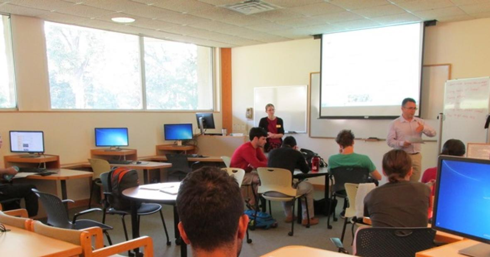

Main ambition of tutorial class
Why is this subject important?
- The main reason of having tutorial subject is to let all the students know
about the situation of the world. As you know that, today's children
only keeps eye for 24hours in the social media and never to know about the
stuffs happening around the world. So, we want them to know about general knowlegde
What will you be able to learn
- Tutorial teaching allows you the freedom to push yourself academically and direct your
own learning. Equally, tutors are able to monitor your progress closely and help you
with any problems with your work at a very early stage.
Why are tutorials important for students?
- Solve problems in a team, develop your group skills, and get to know your peers better
(which may come in handy when picking group members for group projects) Prepare for
and/or review midterms and exams. Clarify any concepts that you might not understand.

Students are busy in their work